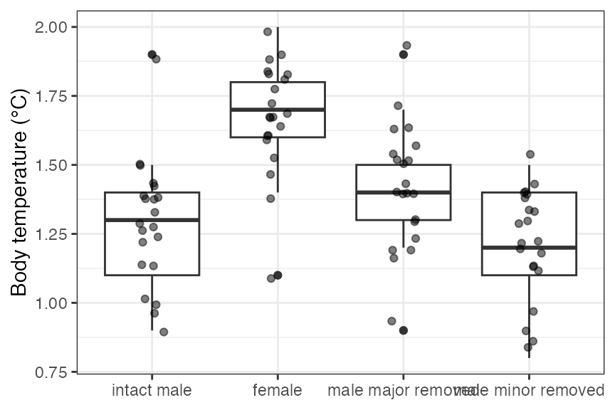
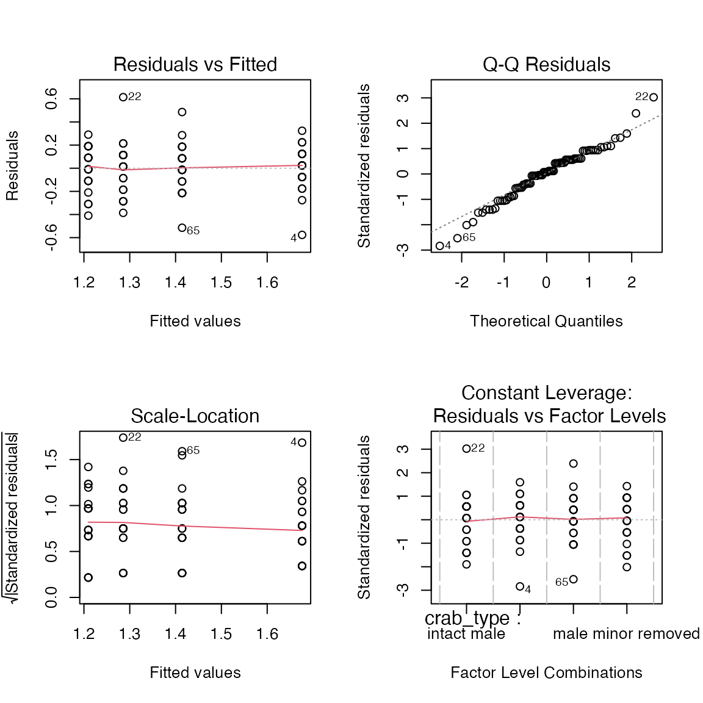

One-way ANOVA as a linear model, assumption checks, Tukey post-hoc tests with emmeans, and the Kruskal-Wallis alternative, using the fiddler crab and nematode data from lecture.
ANOVA compares the means of three or more groups in one test. It asks whether the variation among group means is large compared to the variation within groups (the F-ratio).
\(H_0: \mu_1 = \mu_2 = \dots = \mu_k\) vs. \(H_A\): at least one mean differs.
A significant F says some means differ, not which. Post-hoc tests answer that.
Data: body temperature (°C) of fiddler crabs in four groups: females, intact males, and males with the major or minor claw removed. Does the big claw act as a heat sink?
Assumptions: independent observations, normal residuals, equal variances among groups.
Step 1: Load packages and data
library(tidyverse)library(car) # leveneTest(), Anova()library(emmeans) # post-hoc comparisonslibrary(FSA) # dunnTest() for Kruskal-Wallis follow-upcrab_df <-read_csv("data/fiddler_crabs.csv") %>%mutate(crab_type =factor(crab_type),# make intact males the reference (control) groupcrab_type =fct_relevel(crab_type, "intact male"))count(crab_df, crab_type)
# A tibble: 4 × 2
crab_type n
<fct> <int>
1 intact male 21
2 female 21
3 male major removed 21
4 male minor removed 21
# A tibble: 4 × 5
crab_type n mean sd se
<fct> <int> <dbl> <dbl> <dbl>
1 intact male 21 1.29 0.226 0.0494
2 female 21 1.68 0.197 0.0430
3 male major removed 21 1.41 0.215 0.0469
4 male minor removed 21 1.21 0.192 0.0419
crab_df %>%ggplot(aes(crab_type, body_temp_c)) +geom_boxplot() +geom_jitter(width =0.1, alpha =0.5) +labs(x =NULL, y ="Body temperature (°C)") +theme_bw()

Step 3: Fit the model
ANOVA is a linear model with a categorical predictor.
crab_model <-lm(body_temp_c ~ crab_type, data = crab_df)
Step 4: Check the assumptions
par(mfrow =c(2, 2))plot(crab_model)

par(mfrow =c(1, 1))shapiro.test(residuals(crab_model)) # normal residuals?
Shapiro-Wilk normality test
data: residuals(crab_model)
W = 0.97566, p-value = 0.112
leveneTest(body_temp_c ~ crab_type, data = crab_df) # equal variances?
Levene's Test for Homogeneity of Variance (center = median)
Df F value Pr(>F)
group 3 0.1587 0.9238
80
Both p > 0.05 and the plots look fine, so the ANOVA assumptions hold.
Step 5: The ANOVA table
anova(crab_model)
Analysis of Variance Table
Response: body_temp_c
Df Sum Sq Mean Sq F value Pr(>F)
crab_type 3 2.6413 0.88044 20.312 6.997e-10 ***
Residuals 80 3.4676 0.04335
---
Signif. codes: 0 '***' 0.001 '**' 0.01 '*' 0.05 '.' 0.1 ' ' 1
Reading the output:
Df: k − 1 = 3 for groups; N − k = 80 for residuals.
Sum Sq / Mean Sq: variation among groups and within groups. Mean Sq = Sum Sq / Df.
F value: Mean Sq(groups) / Mean Sq(residuals). Large F → group means differ more than chance.
Pr(>F): p < 0.001, so at least one group mean differs.
With one factor, anova(), Anova(type = "II"), and Anova(type = "III") all give the same answer. The type only matters with two or more factors (see the two-way ANOVA vignette).
summary(crab_model)$r.squared # share of variation explained by crab type
[1] 0.4323687
Step 6: Which groups differ? Post-hoc tests
Estimated marginal means, then all pairwise comparisons with a Tukey adjustment.
crab_type emmean SE df lower.CL upper.CL
intact male 1.29 0.0454 80 1.20 1.38
female 1.68 0.0454 80 1.59 1.77
male major removed 1.41 0.0454 80 1.32 1.50
male minor removed 1.21 0.0454 80 1.12 1.30
Confidence level used: 0.95
pairs(crab_emm, adjust ="tukey")
contrast estimate SE df t.ratio p.value
intact male - female -0.3905 0.0643 80 -6.077 <0.0001
intact male - male major removed -0.1286 0.0643 80 -2.001 0.1962
intact male - male minor removed 0.0762 0.0643 80 1.186 0.6375
female - male major removed 0.2619 0.0643 80 4.076 0.0006
female - male minor removed 0.4667 0.0643 80 7.263 <0.0001
male major removed - male minor removed 0.2048 0.0643 80 3.187 0.0108
P value adjustment: tukey method for comparing a family of 4 estimates
Compact letter display: groups that share a letter are not significantly different.
crab_type emmean SE df lower.CL upper.CL .group
male minor removed 1.21 0.0454 80 1.09 1.33 a
intact male 1.29 0.0454 80 1.17 1.40 ab
male major removed 1.41 0.0454 80 1.30 1.53 b
female 1.68 0.0454 80 1.56 1.79 c
Confidence level used: 0.95
Conf-level adjustment: sidak method for 4 estimates
P value adjustment: sidak method for 6 tests
significance level used: alpha = 0.05
NOTE: If two or more means share the same grouping symbol,
then we cannot show them to be different.
But we also did not show them to be the same.
Step 7: When assumptions fail — Kruskal-Wallis
Nematode data: lifespan (days) of worms in four treatments. Check the assumptions first:
Kruskal-Wallis rank sum test
data: x and g
Kruskal-Wallis chi-squared = 29.4629, df = 3, p-value = 0
Dunn's Pairwise Comparison of x by g
(Benjamini-Hochberg)
Col Mean-│
Row Mean │ water adult larva
─────────┼─────────────────────────────────
adult │ -3.124258
│ 0.0027*
│
larva │ 0.916911 4.041169
│ 0.4310 0.0002*
│
larva+ad │ -3.505582 -0.381324 -4.422493
│ 0.0009* 0.7030 0.0001*
FDR = 0.05
Reject Ho if adjusted p ≤ FDR with stopping rule, where (unadjusted) p = Pr(|Z| ≥ |z|)
Use P.adj, not P.unadj. For Kruskal-Wallis, report medians.
Step 8: Write it up
crab_aov <-anova(crab_model)
Body temperature differed among crab types (one-way ANOVA: F3,80 = 20.3, p < 0.001, R² = 0.43). Females were warmer than all three male groups, and males with the major claw removed were warmer than males with the minor claw removed (Tukey, p < 0.05).
Report F with both df, p, and which groups differed. Show means ± SE with the letters from Step 6.